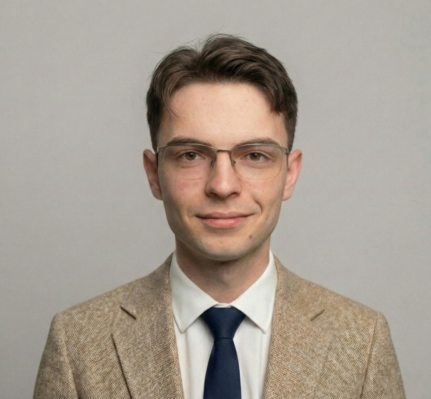
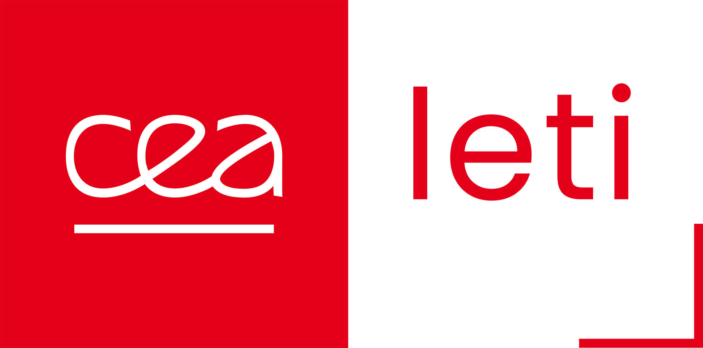
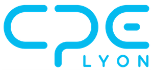
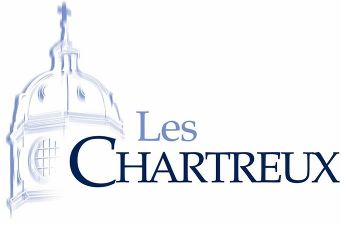

Bonjour, je me présente,
Ingénieur en Électronique • Physique & Microélectronique
Du silicium au quantique, je conçois des circuits électroniques pour repousser les limites du calcul.

Ingénieur en électronique spécialisé dans la conception de front-ends analogiques de précision et la mesure de courants ultra-faibles, avec une expérience pratique en firmware FPGA/HDL et en conception de circuits intégrés mixtes.
Depuis trois ans au CEA-Leti, je développe des électroniques de conversion I/V cryogénique et de multiplexage pour dispositifs quantiques, de la conception de circuits à l'intégration sur carte. Mon parcours couvre l'ensemble de la chaîne : de la fabrication en salle blanche à la caractérisation 4K, en passant par le prototypage PCB pour des applications réelles.
Admis au programme doctoral EDMI de l'EPFL (Mai 2026), je suis ouvert à un sujet de doctorat aligné avec mes intérêts de recherche, comme à un poste d'ingénieur électronique en R&D - électronique cryogénique, calcul neuromorphique et circuits mixtes pour environnements contraints.
Je m'intéresse à la conception de dispositifs et de circuits sur l'ensemble de leur cycle de vie - de la fabrication au tapeout jusqu'à l'application sur PCB - pour repousser les limites du calcul dans les environnements les plus contraints.
Conception de circuits robustes opérant en conditions cryogéniques et sous radiation. Électronique cryo-CMOS, calcul fiable (reliable computing) et durcissement pour l'embarqué spatial et les systèmes quantiques.
Technologies au-delà du CMOS : CMOS 2.0, mémoires émergentes (PCM, RRAM), capteurs avancés et dispositifs quantiques. Optimisation des métriques PPA par de nouveaux matériaux pour les architectures de calcul de prochaine génération.
Conception intégrée du dispositif au circuit, avec ou sans SDTCO (System-Design Technology Co-Optimization). Convertisseurs ΔΣ, front-ends RF (LNA, mixeurs, buffers), PLL et filtres gm-C, du schématique au layout et au tapeout.
Intelligence artificielle abordée par le matériel et l'interface avec le logiciel : calcul en/près-mémoire, cœurs de calcul à base de crossbars, réseaux de neurones à impulsions (SNN) et IA embarquée robuste.

Développement d'électroniques de lecture pour dispositifs quantiques. Conception d'un front-end de multiplexage 50 canaux avec TIA intégré opérant à 4K. Caractérisation FD-SOI et optimisation de process de découpe 300mm.

Physique & Systèmes Microélectroniques, en alternance avec le CEA-Leti. Formation en conception numérique (FPGA, RISC-V), circuits analogiques/mixtes (Cadence), physique des semiconducteurs, et procédés salle blanche (INL).

Classes préparatoires aux Grandes Écoles. Formation intensive en mathématiques, physique et sciences de l'ingénieur.
Ouvert aux opportunités de doctorat, postes d'ingénieur R&D et collaborations de recherche. N'hésitez pas à me contacter !